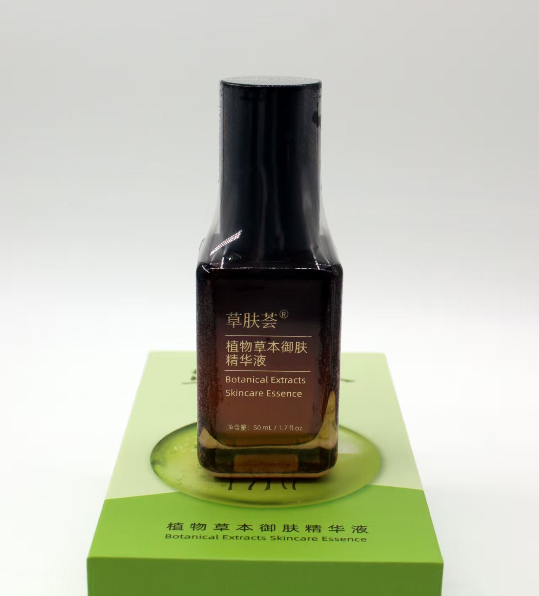

THE ESSENCE / 3D EXPERIENCE
让草本，
有了立体的样子。
琥珀玻璃，黑色外盖，金色字印。
从真实照片，走近每一个外观细节。
草肤荟植物草本御肤精华液50 mL
03 三叶鬼针草 · 配方第 3 项05 千日菊 · 配方第 5 项09 红景天 · 配方第 9 项

产品实拍
草肤荟植物草本御肤精华液
正在进入 3D 影棚…
当前设备未能启用 3D 渲染，请使用 Chrome 或 Edge 查看。查看实拍参考 ↗
拖动旋转 · 滚轮缩放 · 点击植物了解配方